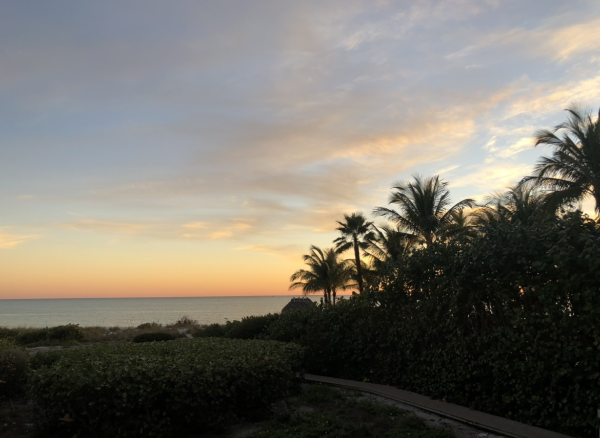
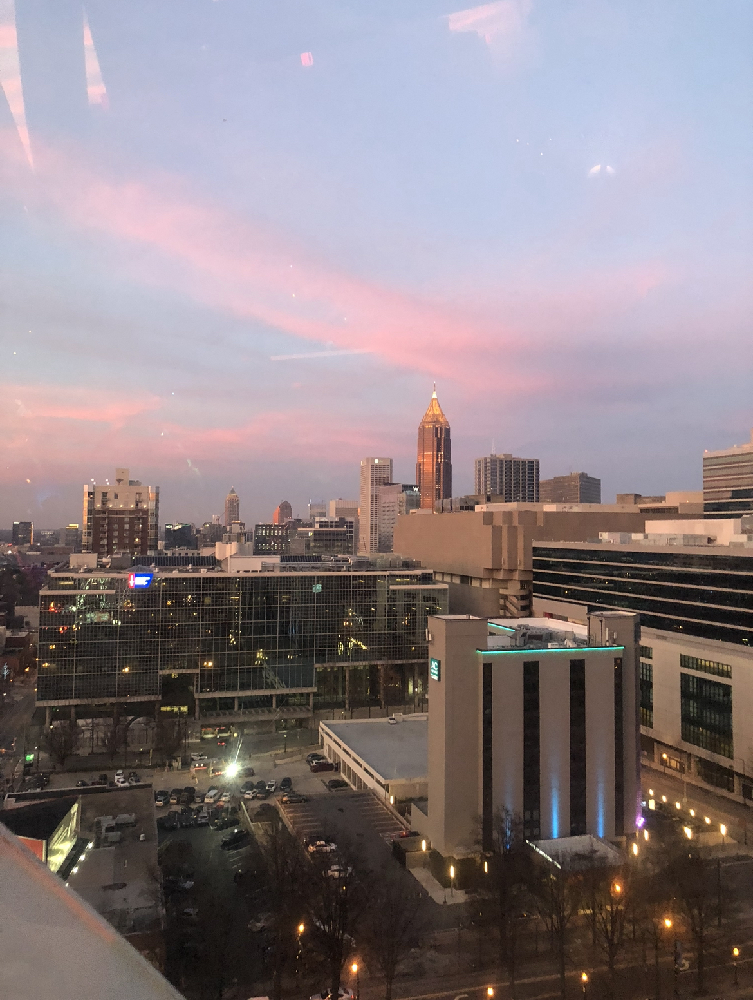
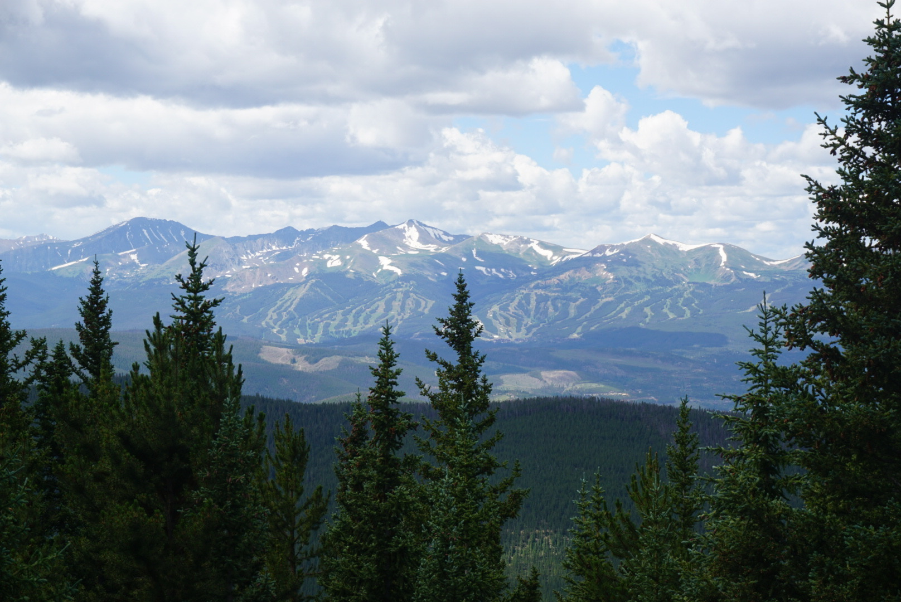

Bobby has been traveling for his entire life, and it has become a regular part of his lifestyle. Before the COVID-19 Pandemic, he would take 2-3 trips per year. These trips would be in addition to his annual trips to Florida in the spring and winter. This page offers a glimpse into his traveling lifestyle.
Sanibel is a small island off the Gulf Coast of Florida. Bobby has been visiting his grandparents in Sanibel since he was only 8 months old! Since then, he has not missed a year and normally visits multiple times per year. Sanibel is one of his favorite places since it is smaller and quieter. The island also acts as a wildlife refuge and has spectacular sunsets year-round!
Another popular place Bobby travels to is Atlanta, GA. It became a recurring spot after he and his dad spent a weekend here. They both enjoyed the culture and atmosphere of the city. Atlanta also offers a plethora of fun things to do. They have an incredible botanical garden and an array of activities around Olympic Park. A couple of notable things to do in Olympic Park are the Georgia Aquarium and the Coca-Cola museum.
One of Bobby's more memorable trips was a trip out to Colorado with his friends following their high school graduation. While hiking through the mountains was fun and offered amazing views, that was not the most memorable part of the trip. While they drove out to Colorado, they hit a small bucket and did not think much of it. The next day after they arrived, they drove to the grocery store, and the engine began making a bad noise. After taking the car to the mechanic, they were told it leaked too much oil, and the engine was totaled. Essentially, they were left without a car for a week and a half and forced to fly home.
